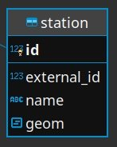
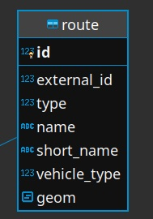
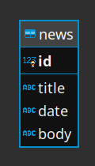
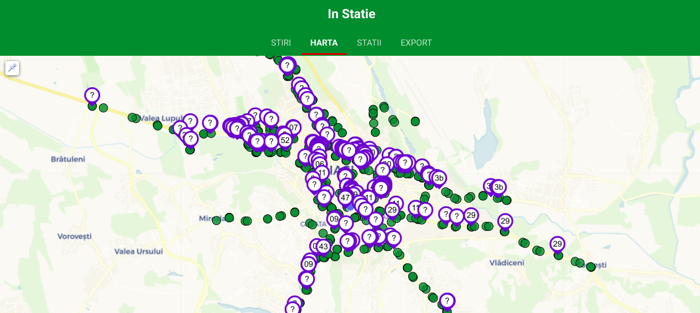

"InStatie" este o aplicație concepută pentru urmărirea transportului public din Iași.
Database
Folosim baza de date PostgreSQL impreuna cu extensia PostGIS pentru a salva coordonatele statiilor si a
rutelor.
Pentru a interactiona cu baza de date folosim query builder-ul Knex.js impreuna cu extensia knex-postgis
pentru a avea access la functiile suplimentare din PostGIS.
Tabelul station
Asa arata tabelul station, acesta fiind tabelul unde vor fi stocate toate detaliile legate de
statii:

Fig.1 - Structura tabelului station
Tabelul route
Asa arata structura tabelului route acesta fiind tabelul unde vor fi stocate toate detaliile legat de
rutele de transport:

Fig.2 - Structura tabelului route
Tabelul route_station
Acest tabel este un join table care face legatura intre tabelele station si route pentru a sti prin ce
statii trece o ruta. De asemenea salvam numarul statiei in ruta respectiva ca sequence
Asa arata structura tabelului route_station:
Fig.3 - Structura tabelului route_station
Tabelul news
Acest tabel retine stiri legate de transportul public din iasi
Asa arata structura tabelului news:

Fig.4 - Structura tabelului news
Front End
Aplicatia de Front End este un PWA (progressive web application) si respecta toate conditiile pentru a fi
unul
Este responsive, functioneaza pe toate device-urile
Se poate instala pe device datorita web manifest-ului
Are un service-worker care face cache la request-uri si le salveaza in IndexedDB pentru a fi valabile si
offline
Este servit pe HTTPS https://instatie.ro/
Aplicatia a fost dezvoltata folosind web-components (HTML Templates, Custom Elements si Shadow DOM) pentru o
experienta de dezvoltare mai placuta
Stiri
Aceasta pagina preia stirile din back-end si le afiseaza in aplicatie
Harta
Pe aceasta pagina este pusa la dispozitie o harta OSM dezvoltata folosind Leaflet
Pe harta sunt afisate toate statiile din oras si, in timp real, pozitiile tuturor vehiculelor, preluate
folosind Server Sent Events
De asemenea este afisata si pozitia user-ului, daca acesta permite acest lucru

Fig.5 - Exemplu de harta cu statii si locatii
Statii
In aceasta pagina user-ul poate cauta si selecta o statie pentru a vedea vehiculele care vin spre aceasta
si timpul aproximativ ramas.
Export
Aceasta pagina ofera posibilitatea de a descarca date legate de statii, rute si stiri in format CSV.
Back End
Database Population
Baza de date este populata efectuand web scraping pe site-ul SCTP Iasi si utilizand API-ul oferit de Wink
Multimedia.
Sunt Populate toate 4 tabelele, acest proces ruland sub un cronjob in fiecare zi
Route Finder
Datele despre locatia vehiculelor in timp real oferite de SCTP Iasi prin API-ul Opendata le lipseste ruta
pe care merge vehiculul.
Am implementat un algoritm care incearca sa gaseasca ruta vehiculelor, mapand cursa lor cu rutele din
baza de date
Vehiculele sunt improspatate la fiecare 30 de secunde si in acelasi timp ruleaza algoritmul de gasire a
rutei
Pentru a determina vehiculele care urmeaza sa ajunga intr-o statie si timpul ramas pana ajung, ne folosim
de vehiculele pentru care deja am gasit ruta si incercam sa gasim unde sunt exact in acea ruta si care
sunt urmatoarele statii.
Dupa ce am gasit urmatoarele statii apelam la un API oferit de Waze pentru a calcula timpul necesar
pentru ca vehiculul sa ajunga la acea statie.